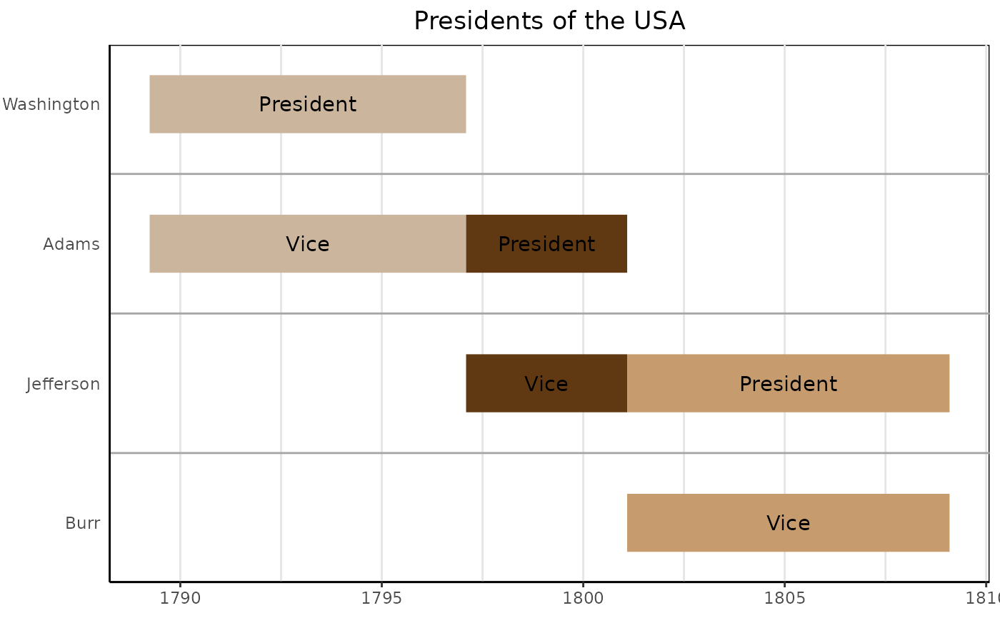

Provide a data frame with event data to create a static timeline plot created by ggplot2. Simplest drawable dataframe can have columns `event` and `start`.
gg_vistime(
data,
col.event = "event",
col.start = "start",
col.end = "end",
col.group = "group",
col.color = "color",
col.fontcolor = "fontcolor",
optimize_y = TRUE,
linewidth = NULL,
title = NULL,
show_labels = TRUE,
background_lines = NULL,
...
)data.frame that contains the data to be visualized
(optional, character) the column name in data that contains event
names. Default: event.
(optional, character) the column name in data that contains start
dates. Default: start.
(optional, character) the column name in data that contains end dates.
Default: end.
(optional, character) the column name in data to be used for
grouping. Default: group.
(optional, character) the column name in data that contains colors
for events. Default: color, if not present, colors are chosen via
RColorBrewer.
(optional, character) the column name in data that contains the
font color for event labels. Default: fontcolor, if not present,
color will be black.
(optional, logical) distribute events on y-axis by smart heuristic (default), otherwise use order of input data.
(optional, numeric) the linewidth (in pixel) for the events (typically used for large amount of parallel events). Default: heuristic value.
(optional, character) the title to be shown on top of the timeline.
Default: NULL.
(optional, boolean) choose whether or not event labels shall be
visible. Default: TRUE.
(optional, integer) the number of vertical lines to draw in the background to demonstrate structure (default: heuristic).
for deprecated arguments up to vistime 1.1.0 (like events, colors, ...)
gg_vistime returns an object of class gg and ggplot.
Functions ?vistime and ?hc_vistime for different charting engines (Plotly and Highcharts).
# presidents and vice presidents
pres <- data.frame(
Position = rep(c("President", "Vice"), each = 3),
Name = c("Washington", rep(c("Adams", "Jefferson"), 2), "Burr"),
start = c("1789-03-29", "1797-02-03", "1801-02-03"),
end = c("1797-02-03", "1801-02-03", "1809-02-03"),
color = c("#cbb69d", "#603913", "#c69c6e")
)
gg_vistime(pres, col.event = "Position", col.group = "Name", title = "Presidents of the USA")

if (FALSE) {
# ------ It is possible to change all attributes of the timeline using ggplot2::theme()
data <- read.csv(text="event,start,end
Phase 1,2020-12-15,2020-12-24
Phase 2,2020-12-23,2020-12-29
Phase 3,2020-12-28,2021-01-06
Phase 4,2021-01-06,2021-02-02")
p <- gg_vistime(data, optimize_y = T, col.group = "event", title = "ggplot customization example")
library(ggplot2)
p + theme(
plot.title = element_text(hjust = 0, size=30),
axis.text.x = element_text(size = 30, color = "violet"),
axis.text.y = element_text(size = 30, color = "red", angle = 30),
panel.border = element_rect(linetype = "dashed", fill=NA),
panel.background = element_rect(fill = 'green')) +
coord_cartesian(ylim = c(0.7, 3.5))
}